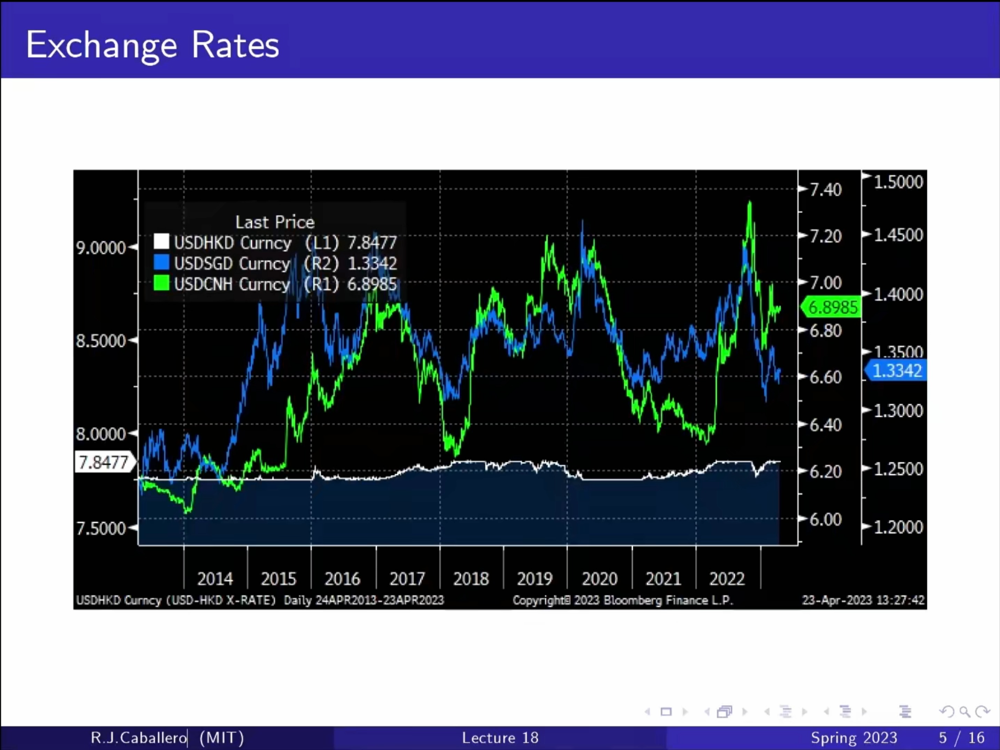
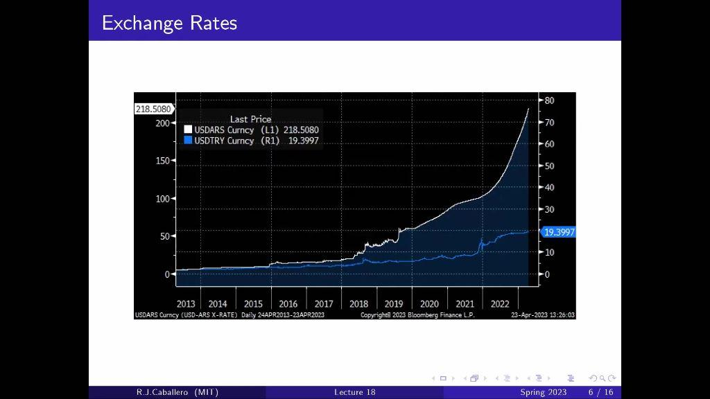
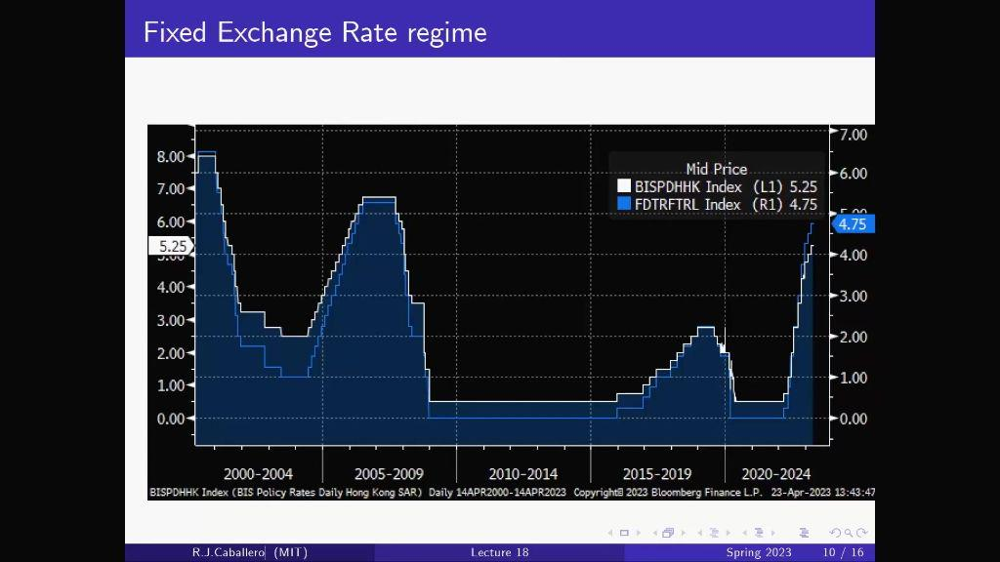
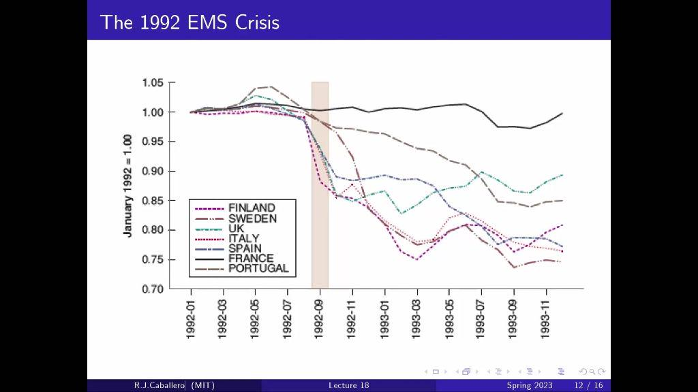
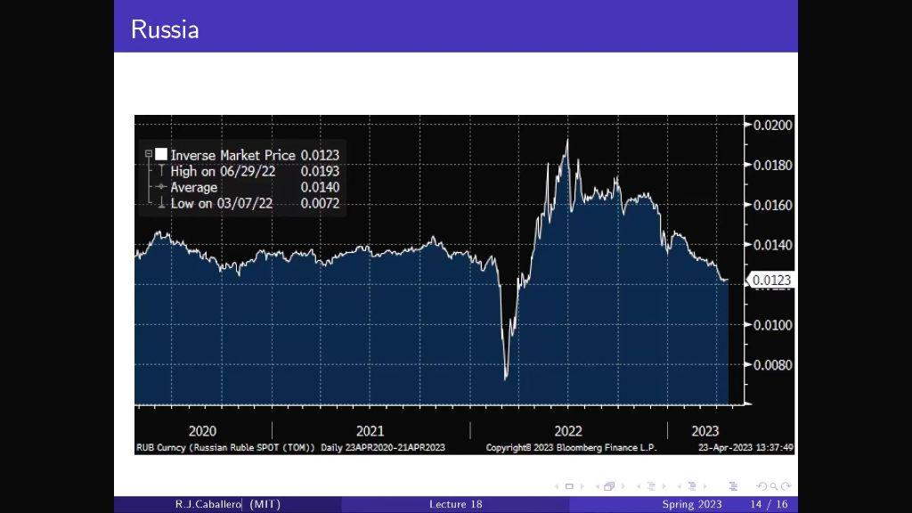
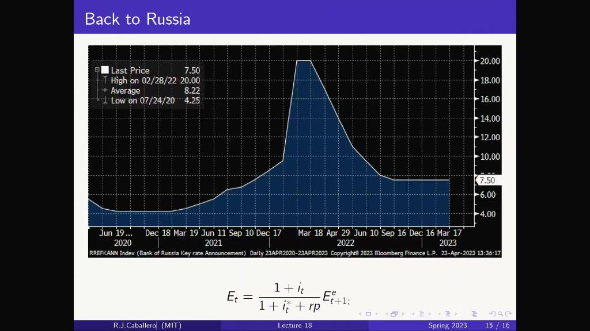

Lecture 21: Exchange Rate Regimes
第 20 讲在浮动汇率下用 Mundell–Fleming 模型连接本国产出、政策利率与汇率。第 21 讲讨论汇率制度：固定汇率会限制什么政策？为什么浮动汇率也有成本？发生贬值压力时，利率、预期和风险补偿如何相互影响？
本页按新提供的第 21 讲 PPT 重整，并用官方逐字稿补足解释。下文“PPT 第几页”按上传文件的 19 页顺序计数，避免截图内沿用的旧 Lecture 17/18 页脚与封面 Lecture 21 混淆。
| 课件位置 | 笔记主线 |
|---|---|
| 第 2–3 页 | 复习外部冲击，推出可信盯住下的利率约束 |
| 第 4–8 页 | 不同货币的汇率历史图与报价口径 |
| 第 9–12 页 | MF 模型、国内衰退、财政与货币政策、港美利率 |
| 第 13–15 页 | 投机攻击、1992 年欧洲汇率危机、未来预期 |
| 第 16–18 页 | 卢布案例、风险溢价、汇率制度选择 |
前半讲先用固定价格、自由资本流动、无风险溢价的模型。若预期通胀为零，则 r=i。卢布案例再加入风险溢价 rp；资本管制出现时，也不能继续把完全自由资本流动的 UIP 当作无条件精确关系。
| 单一冲击，央行保持本国 i | 当前 E | 代入 UIP 的开放经济 IS | 产出 Y |
|---|---|---|---|
| Eᵉ↑：预期未来本币更强 | 上升，本币升值 | 净出口需求减少，左移 | 下降 |
| Y*↓：外国需求变弱 | 不变 | 出口减少，左移 | 下降 |
| i*↑：外国加息 | 下降，本币贬值 | 给定 Y 的 NX 增加，右移 | 提高 |
这里每行都固定没有受到冲击的其他变量。外国加息那一行尤其固定了 Y* 与 Eᵉ，也假设本国央行没有跟随加息。现实外国加息可能同时影响外国需求与风险补偿，所以最后一行不是现实全部外溢效应的预测。
本讲接下来改变的是政策规则：如果央行必须守住 E，就不能再默认本国 i 不动。
央行承诺把当前汇率固定在 Ē，且市场相信未来仍然保持同一水平，即 Eᵉ=Ē。在资本自由流动、风险溢价为零的模型中：
锚国是被盯住货币所属的经济体。若锚国加息，本国不能一边维持同一可信盯住，一边任意保留原来的较低利率。央行因此放弃了独立货币政策这一稳定本国周期的工具。
只知道今天 E 固定，不足以推出 i=i*。市场若预期未来贬值，或者存在风险溢价、交易成本、资本管制，利差仍可能存在。后文课件的 rp 公式正是对无风险溢价假设的扩展。
PPT 第 4–8 页把多种货币对美元的汇率放在一起，展示不同程度的浮动、管理和盯住。图形可以帮助观察稳定程度，但单靠一条价格曲线不能证明一套完整制度，更不能把 2023 年的截图当作今天的制度状态。
| 课件页 | 图例中的货币 | 读图重点 |
|---|---|---|
| 4 | 欧元、日元、英镑 | 有共同波动，也有各自变化；图中使用多个纵轴 |
| 5 | 澳元、加元、瑞典克朗 | 同样面对美元，幅度与时间路径并不相同 |
| 6 | 巴西雷亚尔、南非兰特、智利比索 | 汇率水平和波动程度差异很大 |
| 7 | 港元、新加坡元、离岸人民币 CNH | 港元线较稳定；另外两条线仍有明显变化 |
| 8 | 阿根廷比索、土耳其里拉 | 本币/美元报价上升，不是这些本币升值 |


例如 USDHKD 表示每美元兑换多少港元；当“本国”是香港、“外国”是美国时，它是模型 E 的倒数。其他货币对也应逐一读单位，不能把所有 Bloomberg 曲线上升都叫作本币升值。
多纵轴也意味着不能用曲线在图片上的高低判断哪种货币“更贵”，更不能用像素振幅直接比较百分比波动。课程以中国等案例说明资本管制与管理可以改变跨境资产替代约束，制度不是只有完全固定和完全自由浮动两个端点。
PPT 第 9 页把 UIP 代入商品市场；第 10–11 页问同一个衰退问题在两种制度下如何处理。
| 面对本国需求不足 | 浮动汇率 | 可信固定汇率、锚国利率不变 |
|---|---|---|
| 政府增加 G | IS 右移；央行保持 i 时，E 不变，Y↑ | IS 右移；i=i*、E=Ē 不变，Y↑ |
| 本国央行降低 i | LM 下移，E↓；投资与净出口需求支持 Y | 不能任意低于 i*，否则与可信盯住不相容 |
本课程用央行设定政策利率的水平 LM。因此在初始利率、汇率与商品需求关系相同，并且财政实验中利率都保持不变时，两种制度的财政扩张效果可以相同。不能直接套用依赖其他货币政策假设的“浮动汇率下财政完全无效”。
产出增加带来进口增加，开放经济的乘数受到进口泄漏影响。图中的 IS 以固定 E 为条件，不要与把浮动 UIP 代入后的 IS 无条件混用。
PPT 第 12 页并列香港与美国的政策利率序列。图中多次升降周期方向相近，用来展示联系汇率安排对本国利率选择的约束。现实两条线的水平和调整时点并非处处完全重合，不能把图当成无条件的逐日 i=i* 恒等式。

如果锚国因自身需求或通胀压力而加息，本国为维持可信盯住而跟随，即使本国已经低迷，也可能面临更低的投资与产出。冲击越不同步，失去独立货币政策的代价越大。
浮动且本国 i 不变时，i*↑ 会通过本币贬值支持净出口；可信盯住时，本国需要跟随 i*，不能把前一种结论直接移过来。这里的差异来自政策约束。
在可信盯住、无风险溢价的模型中，如果本国 i 高于与盯住相容的水平，本国资产吸引资金流入，形成升值压力。央行若守住 E，就需要买入外币、卖出本币，增加本币供应。反过来，资金外流和贬值压力下，防守方向是卖出外汇、买入本币。
| 压力 | 防守方向 | 传统货币供给机制 |
|---|---|---|
| 本币升值，E↑ | 买外币、卖本币 | 本币供给增加，利率趋于回落 |
| 本币贬值，E↓ | 卖外币、买本币 | 本币供给收缩，利率趋于上升 |
外汇储备有限；短期冲销操作也不能在自由资本流动与资产高度替代的模型中永久维持任意利差。现代央行具体操作方式可以不同，UIP 的均衡约束仍需要满足。这一段是操作逻辑补充，不是 PPT 中某国干预数量的估计。
固定汇率、自由资本流动、独立货币政策不能在本模型中同时完全实现。资本管制会削弱跨境资产替代，因此可为某些混合安排提供空间；现实的制度和管制强度通常不是绝对的开或关。
PPT 第 13 页改变关键预期：市场开始认为盯住撑不下去，Eᵉ 低于当前承诺的 Ē。持有本币资产会面临未来预期汇兑损失，央行若还要守住今天的汇率，就需要用更高利率补偿。
自编例子：Ē=1、i*=2%，Eᵉ 从 1 降至 0.92，所需 i 从 2% 升至约 10.87%。这不是危机中的观测数据。
| 政策选择 | 直接作用 | 成本或风险 |
|---|---|---|
| 加息并继续守住 Ē | 提高本币资产回报，抵消预期贬值损失 | 投资下降、衰退加深；储备和政治承受力仍有限 |
| 调整或放弃盯住 | 允许当前 E 下降，减少维持原水平的压力 | 承诺信誉与外币负债等可能承受损失 |
市场担心高利率的经济成本，可能进一步怀疑承诺是否可持续，从而增加防守压力。这个反馈说明可信度很重要，不表示每个盯住制度都会遭受成功攻击。
PPT 第 14 页标题为 The 1992 EMS Crisis，图中把各国货币相关汇率标准化为 1992 年 1 月=1，展示危机前后不同货币路径的分化。标准化让变化相对容易比较，不代表各国货币原始价格都一样。

官方逐字稿用德国统一后的需求与利率变化说明冲击不同步：锚国的紧缩未必适合其他参与经济体。如果市场预期某些国家将调整汇率，提高利率守住承诺又可能加深其衰退，政策取舍就更困难。PPT 在前一页以英国与 EMS 为例说明允许贬值这一选择。
读图时应看各自路径的转折和相对变化，不把所有国家视为同时采取同一政策。图中有些货币保持较稳定，有些明显下调；单张图和简化 UIP 不足以证明每一国危机的完整成因。
PPT 第 15 页提醒：浮动虽然给了货币政策自主权，但汇率可能很不稳定。预期的未来政策、金融条件和更远的汇率变化，都可能先反映在今天。
最后一式中 j=0 是当前已知利率，写上标 e 只是为了统一记法。未来变量随机时，不能把期望乘积无条件拆成期望值的乘积；这里沿用课件的预期路径简化，使用近似号，并暂不加入风险溢价。
浮动的成本包括企业交易与投资计划更难安排、开放经济的进口价格与通胀预期更易受影响，以及净出口更难预测。这些机制不意味着所有汇率波动都“无意义”，也不意味着固定制度能消除真实经济风险。
PPT 第 16 页展示 2022 年前后卢布的剧烈波动，图中标为逆向市场价格：按每卢布的美元价值理解，向下表示卢布贬值。第 17 页展示俄罗斯政策利率一度升至 20%，并引入风险溢价。这些是课程历史图，不是当前行情。


课件采用下列简化写法，其中 rp 是持有本币资产要求的额外风险补偿，放在外国利率之外的基准回报项中：
| 其他变量固定的冲击 | 当前汇率 E | 含义 |
|---|---|---|
| 本国 i↑ | 上升 | 提高本币资产回报，支持本币 |
| 预期未来 Eᵉ↓ | 下降 | 未来本币更弱的预期压低今天的本币价值 |
| 风险溢价 rp↑ | 下降 | 要求更多补偿，当前本币价格需要降低 |
因此加入 rp 后，可信盯住也不再自动给出 i=i*。只有 rp=0 且其他条件成立时，才回到前半讲的基准。预期贬值和风险溢价是两个不同项：一个改变预期汇兑损益，一个补偿不确定性，不能把两者重复计算成同一笔。
官方逐字稿同时提到大幅加息和资本管制。因而不能仅从“卢布后来反弹”就断言全由加息造成，更不能把资本受限时的价格当作完全自由交易下的模型检验。这里用案例说明金融预期和政策反应，未对各项措施做因果贡献估计。
rp 在此按利率小数代入，例如 4 个百分点写 0.04；它不是贬值概率或外汇储备量。这是课件的风险溢价参数化，不是所有风险都可由一个固定数字概括的精确定价定律。
PPT 第 18 页把选择分成两组条件。第一组决定“失去独立货币政策有多痛”；第二组决定“名义汇率更稳定有多值钱”。
| 条件 | 为什么重要 | 课件的课堂举例或机制 |
|---|---|---|
| 与锚国宏观冲击接近 | 两地需要的利率方向更相似 | 欧元区用于说明共同冲击的意义，不表示成员完全相同 |
| 财政空间充足 | 可以用财政政策缓冲本地衰退 | 课件以香港为例 |
| 劳动和商品市场灵活 | 工资与价格能调整实际汇率 | 课件以香港为例 |
| 跨地区贸易很多 | 减少定价、换汇与交易计划的不确定性 | 名义稳定的收益提高 |
| 跨境金融敞口较大 | 汇率波动会影响跨币种资产负债 | 不等于固定制度消除了调整或违约风险 |
| 通胀或贬值预期缺乏锚 | 可信名义承诺可能帮助稳定预期 | 仍需要相容的财政和金融安排 |
若名义 E 固定而本国通胀高于外国，ε 逐渐上升，本国产品相对变贵。若本国价格相对下降，ε 则下降，可以实现实际贬值，但价格黏性强时调整可能伴随更长时间的低迷与失业。
固定制度的信誉不能只靠宣布目标获得，财政、储备、金融体系和工资价格机制需要与制度相容。课程提供比较框架，不给所有经济体一套永远最优的制度答案。
Ē=Eᵉ=0.8，外国利率 3%，无风险溢价。本国利率多少？若外国升到 5% 呢？
本国利率跟随锚国。若要脱离该利率，必须改变制度或其他假设。
Ē=1，i*=2%，Eᵉ=0.95，rp=0。维持今天的盯住所需 i 是多少？
7% 只是 2%+5% 的小变动近似，精确计算须用增长因子比值。
E=Eᵉ=1，i*=2%，rp=6 个百分点。按课件写法所需 i 为多少？若 Eᵉ 同时降到 0.95 呢？
风险补偿和预期贬值同时存在，会共同提高防守利率；i=i* 只适用于 rp=0 等基准条件。
固定 E 时 Z=40+0.6Y−100i+G，i*=2%、rp=0、G=10，承诺可信。G 增加 4 前后的 Y 呢？
财政仍有效。浮动下若同样固定 i、i*、Eᵉ，且初始汇率和行为方程相同，财政实验也可有相同效果。
本币/美元 Q 从 8 升至 10，本币是升值还是贬值？另若 E 固定、本国通胀 6%、外国通胀 2%，实际汇率如何变化？
第一问本币对美元贬值；Q 上升 25% 与 E 下降 20% 不是同一百分比。第二问是实际升值，说明名义盯住不等于竞争力不变。
先写报价单位，再确定制度、可信度、资本流动与 rp，列出保持不变的外部条件，最后才代入 UIP 或画 IS。
| 符号 | 含义 | 阅读提醒 |
|---|---|---|
| \(E,\ \bar{E},\ E^e\) | 当前汇率、承诺的盯住水平、预期未来汇率 | 外币/本币；E↑ 是本币升值。上标 e 为预期。 |
| Q=1/E | 采用反向口径的市场汇率 | 当外国为美国时可写本币/美元；Q↑ 意味本币贬值。 |
| \(i_t,\ i_t^*,\ \bar{i},\ r\) | 本国名义利率、外国名义利率、政策设定利率、实际利率 | r≈i−预期通胀；本讲零预期通胀的基础模型中 r=i。 |
| rp | 课件风险溢价项 risk premium | 以利率小数计量；不是预期贬值本身。rp=0 才回到基准 UIP。 |
| \(E_t,\ E_{t+j}^e,\ i_{t+j}^{*e}\) | 当前汇率、未来汇率预期、未来外国利率预期 | 未来预期均以当前信息形成，星号表示外国。 |
| \(Y,\ Y^*,\ C,\ I,\ G,\ T,\ NX\) | 本国与外国收入、消费、投资、政府购买、净税收、净出口 | 净出口已按同一价值单位计量；T 为税收减转移支付。 |
| \(P,\ P^*,\ \varepsilon\) | 本国价格、外国价格、实际汇率 | ε=EP/P*；ε↑ 表示本国产品相对更贵。 |
| \(\pi,\ \pi^*,\ g_E,\ g_{\varepsilon}\) | 两国通胀率、名义和实际汇率增长率 | 精确关系：1+gε=(1+gE)(1+π)/(1+π*)。 |
| \(\Delta,\ \prod,\ j,\ n\) | 变化量、连乘、向前期数索引、展开的最后索引 | j=0 对应当前已知变量；向前展开是课件的简化预期路径。 |
| MF / IS / LM / UIP / EMS | Mundell–Fleming / 商品市场 / 货币政策 / 未抛补利率平价 / 欧洲货币体系 | 图形条件和政策规则需要随制度一同说明。 |